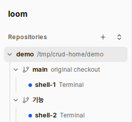

시험 데몬에서 찍었다(화면 언어 English). 줄에는 동작 단추가 없다.

| 줄 | 만들기 | 읽기 | 고치기 | 지우기 |
|---|---|---|---|---|
| 저장소 | 사이드바 머리 [+] | 사이드바 | 없음 | 없음 |
| 워크트리 | 그래프 도구 줄 [새 워크트리] | 사이드바·그래프 | 없음 | 그래프 묶음 머리 [워크트리 삭제] |
| 노드 | 그래프 묶음 머리 [새 노드] | 사이드바·그래프 | 이름: 사이드바·카드. 부모: 그래프에서 끌기 | 그래프 카드 [노드 제거] |
같은 장면을 두 안으로 그렸다. 폭은 기본 260px다. 마우스는 각 그림에서 한 줄에 있다.
왼쪽 셋은 마우스를 올린 줄이 다르다. 넷째는 최소 폭 180px에서 키보드 포커스가 노드 줄에 있다.
NewWorktreePopover). 첫 커밋 전 저장소에서는 단추를 끈다(도구 줄과 같다).NewNodePopover).DeleteWorktreePopover).팝오버는 누른 줄 오른쪽, 사이드바 경계 밖에 붙는다. 내용은 그래프의 팝오버와 같다.
폴더: ~/loom/workspaces/demo/기능
커밋하지 않은 변경이 없습니다.
| 질문 | 권장 | 이유 |
|---|---|---|
| 동작 자리 | A. 줄 끝 단추(마우스·포커스 때) + Delete 키 | 사이드바에서 바로 보인다. 우클릭 메뉴는 새 부품이 크고 찾기 어렵다. |
| 저장소 고치기 | 없음 | 이름은 폴더 이름이고 경로는 저장소의 정체다. 고칠 값이 없다. 다른 경로면 빼고 다시 더한다. |
| 저장소 지우기 | 「목록에서 빼기」: repos 줄만 지운다. 폴더는 지우지 않는다. 그 저장소에 노드가 있으면 거절한다 | 사람의 파일을 잃지 않는다. 노드를 같이 지우면 보관 메시지를 잃는다. 데몬 시작 폴더 저장소는 다음 시작 때 다시 더해진다(지금 규칙). |
| 워크트리 만들기 | 저장소 줄 [새 워크트리]. 도구 줄 단추는 그대로 둔다 | 사이드바 CRUD 요청이다. 같은 팝오버라 새 부품은 단추 하나다. |
| 워크트리 고치기 | 없음 | 브랜치 이름을 바꿔도 폴더 경로는 그대로라 이름과 폴더가 어긋난다. 노드는 폴더 경로를 가리킨다. 터미널의 git branch -m은 5초 안에 사이드바에 보인다. |
| 노드 만들기 | 워크트리 줄에서만. 그 묶음의 뿌리 노드 | 사람이 띄운 노드는 늘 뿌리다(지금 규칙). 자식으로 띄우려면 NewNode에 부모가 생기고 데몬 규칙이 바뀐다. 필요하면 띄운 뒤 그래프에서 끌어 입양한다. |
| 노드 고치기 | 이름만(단추 + F2). 부모 바꾸기는 그래프 끌기 그대로 | 사이드바에서 끌어 입양하는 부품은 크다. 요청이 오면 따로 한다. |
| 노드 지우기 | 단추 + Delete. 확인 없이 바로 지운다 | 카드와 같은 규칙(2026-10-20 사람 지시 「노드 제거시 경고 팝업 안뜨고 바로 삭제」). |
| 파일·함수 | 바꿀 것 |
|---|---|
src/daemon.rs, src/worktree.rs Repos | DELETE /api/repos/{id} 하나. 그 저장소에 노드가 있으면 Problem(거절 글)을 돌려준다. 노드 검사와 줄 지우기는 한 트랜잭션이다. |
web/src/api.ts | removeRepo(id) 하나. |
web/src/Tree.tsx | Item에 줄 동작 목록을 더하고 li 안 .row-acts에 그린다(단추 안에 단추를 두지 못한다). 열린 팝오버 상태 하나. Delete 키. 팝오버는 기존 셋을 그대로 그린다. |
web/src/App.tsx | Tree에 workspaceDir, settings, accounts, 저장소 갱신(putRepo)·저장소 빼기 콜백을 넘긴다. |
web/src/Graph.tsx | recentAgent를 Tree가 쓰도록 내보낸다. 그 밖은 그대로다. |
web/src/styles.css | .row-acts와 단추 규칙. 아이콘 워커가 병합된 뒤 그 아이콘(lucide-react)을 쓴다. |
web/src/locales/* | 「목록에서 빼기」, 거절 글 하나. |
docs/design.md | 「저장소와 워크트리」 더하기 줄의 「목록을 지우는 기능은 없다」를 고치고, 사이드바 줄에 동작을 적는다. |